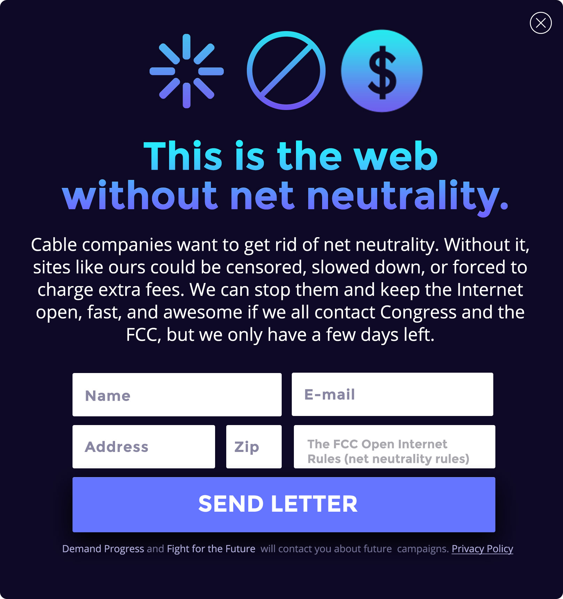
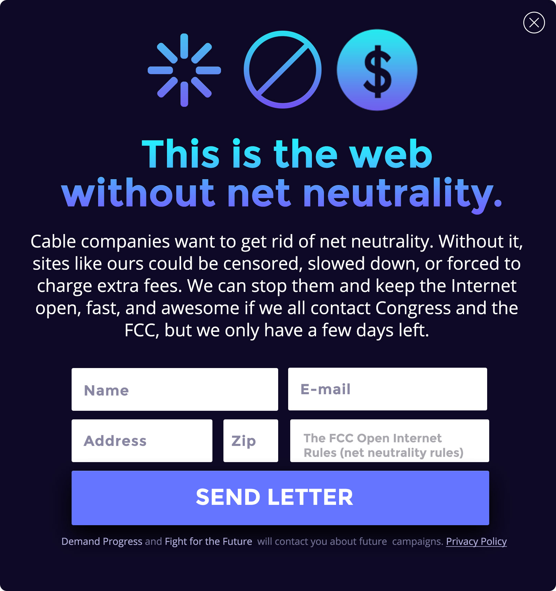
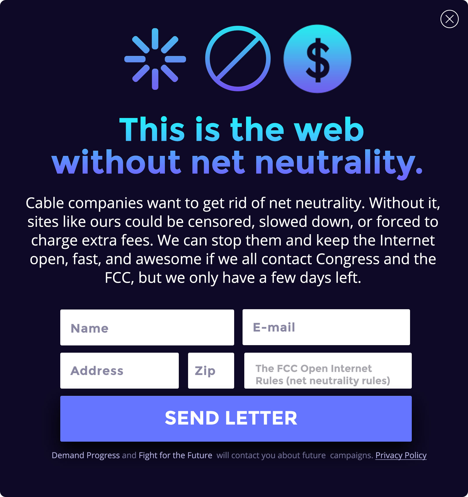

Flood the Senate on February 27 to save net neutrality.
The FCC voted to destroy net neutrality and give big cable companies control over what we see and do online. But our elected officials can overrule the FCC using the Congressional Review Act (CRA), and we need just #OneMoreVote to win in the Senate. On February 27th, the Internet will flood the Senate with phone calls, emails, and meetings, from individuals and local businesses, to get that last Senate vote we need and take the fight to the House. Are you in?
What is net neutrality?
Net neutrality is the basic principle that protects our free speech on the Internet. "Title II" of the Communications Act is what provides the legal foundation for net neutrality and prevents Internet Service Providers like Comcast, Verizon, and AT&T from slowing down and blocking websites, or charging apps and sites extra fees to reach an audience (which they then pass along to consumers.) The Internet has thrived precisely because of net neutrality. It's what makes it so vibrant and innovative—a place for creativity, free expression, and exchange of ideas. Without net neutrality, the Internet will become more like Cable TV, where the content you see is what your provider puts in front of you.
How can we save it?
The FCC voted to kill net neutrality on December 14, 2017. But Congress can block their repeal using the Congressional Review Act (CRA). It takes a simple majority in the Senate and House. It can't be blocked by leadership, and there can be no amendments or filibusters. We already have 50 votes committed in the Senate, so we just need one more to win! Then we take the fight to the House where there are already more than 100 cosponsors. We'll need 218 votes there to win. Let's get started!
What will happen on February 27
Websites, Internet users, and online communities will come together to harness our power to secure the #OneMoreVote we need to pass the CRA resolution in the Senate. We'll provide tools for everyone to make it super easy for your followers / visitors to take action. From the SOPA blackout to the Internet Slowdown, we've shown time and time again that when the Internet comes together, we can stop censorship and corruption. Now, we have to do it again!
SITES: DISPLAY AN ALERT
On February 27, sites from across the web will display a prominent alert on their homepage that shows the world what the web will look like without net neutrality. Below are “spinning wheel of death”, “blocked”, and “upgrade” alert modals; plan to use the one that best fits your site to encourage users to send a letter to the FCC and Congress in support of net neutrality. To use these them, you just need to embed a bit of javascript in the header of your site. Click here to try them out, and then be sure to grab the code on GitHub. If you're a Cloudflare user, try out their BattleForTheNet app. And for Wordpress, use their plug-in here.
And don't worry, none of these will actually block, slow, or paywall your site. But, they will let your users contact their Senators and Representatives without having to leave your platform. They will only show up once and users can click away.

Feel free to use these alerts, or create a unique message that makes sense for your site. For example, if you primarily host video, put the spinning wheel of death on every video with a link to battleforthenet.com so your users can contact their Senators.
USE THESE BANNER ADS
Do you run a site or blog? Use these banner ads to get the word out on net neutrality. There are tons of ad sizes to choose from here.
APPS: SEND A PUSH NOTIFICATION
Do you run a popular mobile app? Tell your users that ISPs want new powers to control what they see and do online.
Or change your avatar to a dreaded loading sign below. And be sure to share these images on Facebook and Twitter.
HELP US GET CREATIVE!
We're just getting started with organizing Operation: #OneMoreVote, so sign up and we’ll get in touch soon with more information. If you have ideas or want to help, let us know. If you run a high-traffic website, startup, or small business, get in touch. We need you!
 
